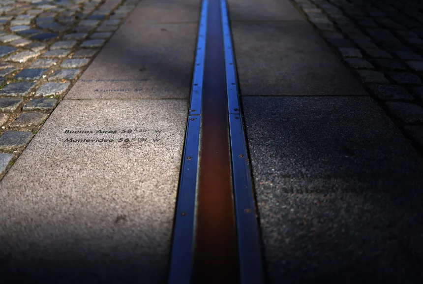
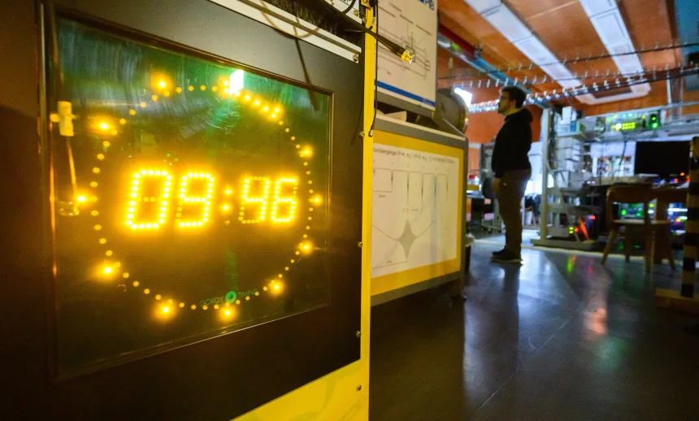

The Leap Second is on the Chopping Block
By Katie Hunt· CNN

London — When the sun hits its highest point over the meridian line that travels north and south from the 351-year-old Royal Observatory Greenwich in London, it's noon Greenwich Mean Time, a tangible and physical reference point that helped establish the world's time zone system.
Timekeeping has long relied on Earth's spin and location of the sun or moon in the sky. Before observatories such as Greenwich, humans used sundials — essentially a stick in the ground that casts shadows as the sun moves overhead. But this ancient link between Mother Earth and today's clocks looks set to be severed.
International timekeepers are on track to vote Thursday on a proposal to eliminate what's known as a leap second — a tiny, but many say important, link between Earth's rotation and the world's time standard used in critical infrastructure such as telecommunications, power grids and computers.
Inserted into global clocks 27 times since 1972, the leap second essentially allows two time systems to run in sync: astronomical time, long anchored by Earth's rotation and measured by observatories, and Coordinated Universal Time, or UTC, the global standard that's set by ultraprecise atomic clocks first developed in the 1950s. These cutting-edge, lab-based clocks rely on tracking the natural vibrations — or ticks — of atoms.
The two time-telling methods differ because Earth does not rotate at a steady pace but wobbles, essentially making it a “lousy” clock, said Jeff Sherman, a group leader of the National Institute of Standards and Technology's Time and Frequency Division in Boulder, Colorado.
This wobbling stems from various factors, such as the moon's gravitational pull, shifts deep in the planetary core, and the movement of water and ice on Earth's surface — an effect that's exacerbated by the melting of the polar ice caps due to the climate crisis.
“We have to make a choice on whether or not the most important thing is a sense of time given by objects in the sky directly above, say, the Greenwich longitude,” he said referring to the Greenwich meridian that marks 0 degrees longitude. “Or you decide to follow what you believe are more stable, laboratory, man-made clocks,” Sherman added.

Leap seconds have served as the compromise between the two time-telling systems. Most people never notice them — unlike a leap year, which adds an extra day to February every four years to account for the discrepancy between the Gregorian calendar used in most parts of the world and the time it takes Earth to complete one orbit around the sun.
But the addition of leap seconds, which happens at irregular intervals and is announced with only six months' notice, creates problems for operators of data servers, high-frequency financial trading systems and other infrastructure that rely on precise timekeeping to work properly.
The extra second crashed Reddit and LinkedIn and knocked out Qantas' booking system in 2012. And when the most recent leap second was added at the end of 2016, customers of cloud computing provider Cloudflare briefly experienced outages or delays after its servers failed to handle the introduction of a leap second properly. Big tech players such as Meta have been calling for its demise, describing the leap second as “a major source of pain.”

Why lose the leap second?
The 69 member states of the International Bureau of Weights and Measures, an intergovernmental organization that determines measurement standards, will meet this week in Versailles near Paris. The group, known by its French acronym BIPM, will vote on a resolution to ditch the leap second, a move that would take effect in May 2027. A majority needs to support the proposal, said Patrizia Tavella, director of the time department at BIPM.
When atomic time was first introduced, Tavella said, it was important to keep it tethered to astronomical time because navigational tools still relied on traditional celestial methods and timekeeping. With the advent of GPS, however, that was no longer the case. “This correction in time has become a serious issue for modern applications,” she added.